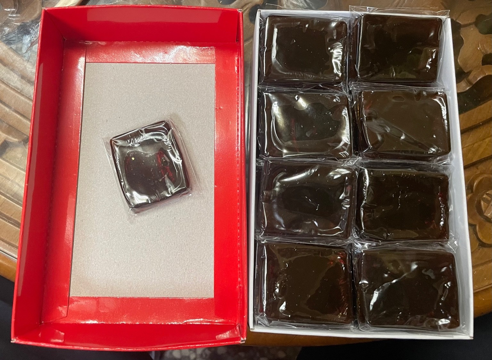
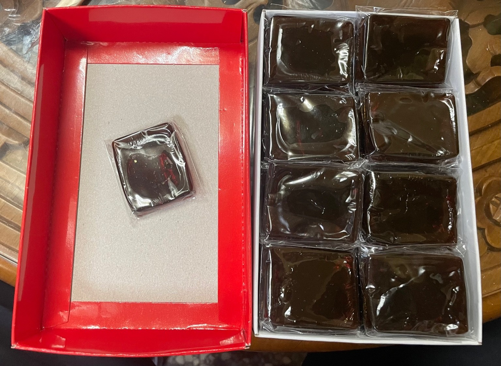

B2B / CLINIC / PHARMACY
合作供應專頁
本頁提供中醫診所／中藥房／通路合作洽談使用。以規格、供應方式與搭配情境為主，不走話術，合作細節可依需求調整。
✔ 規格清楚
✔ 供應彈性
✔ 長期配合
✔ LINE 快速洽談
建議合作流程：說明通路型態（診所／藥房／餐飲／團購）→ 我們依需求提供合適規格與報價。
PRODUCT
龜鹿膏


| 容量 | 100 ± 5 公克 |
|---|---|
| 食用建議 | 每日早上及下午各一小匙，可單吃或搭配溫開水、煮湯。 |
| 成分 | 鹿角、全龜、枸杞、紅棗、粉光蔘、黃耆。 |
| 售價 | 依合作形式報價 |
PRODUCT
龜鹿飲


| 形式 | 單包／10 包裝（通路彈性供應） |
|---|---|
| 容量 | 180 c.c.／包 |
| 飲用方式 | 可直接飲用，或隔水加熱後溫飲。 |
| 成分 | 水、鹿角、全龜、枸杞、黃耆、紅棗、粉光蔘。 |
| 售價 | 依合作形式報價（單包／整袋） |
提供單包與 10 包裝兩種供應方式，方便門診搭配或通路彈性販售。
PRODUCT
龜鹿膠塊


 

| 原料 | 全龜板、駝鹿角 |
|---|---|
| 製程 | 長時間熬製 → 手工裝模定型 → 手工入袋包裝 |
| 規格 | 小盒：4兩／半斤；大盒：1斤 |
| 售價 | 依合作形式報價 |
PRODUCT
鹿茸粉


| 容量 | 75 公克 |
|---|---|
| 用途 | 配方／調配／專業補養用途 |
| 售價 | 依合作形式報價 |